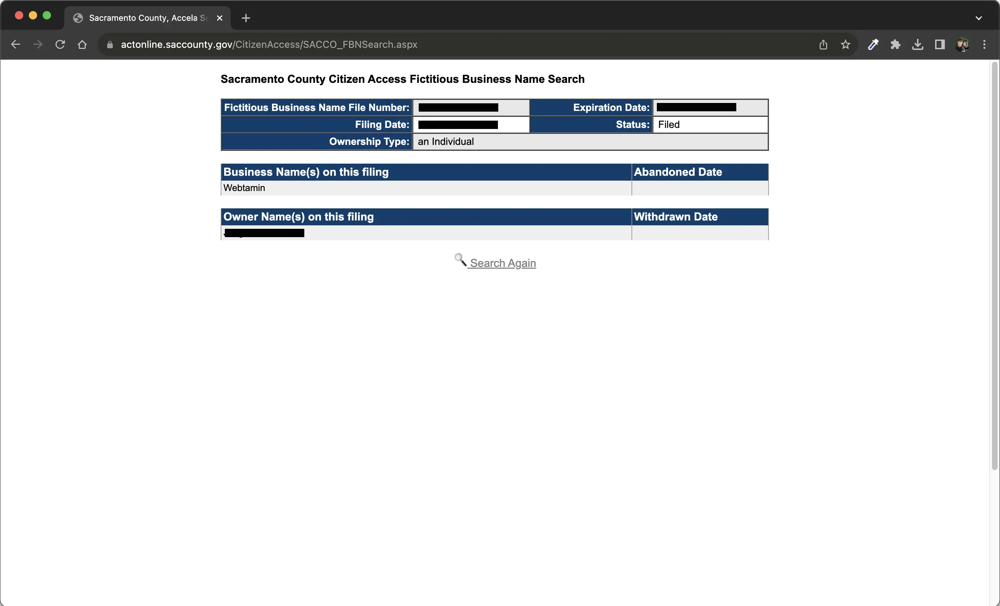
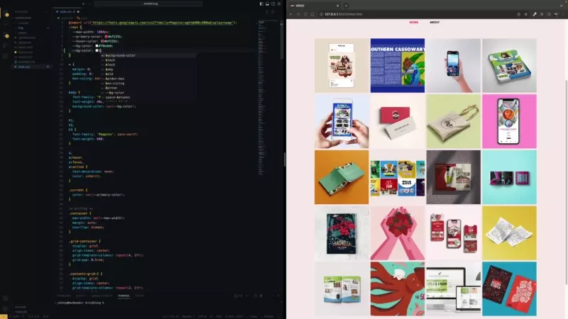
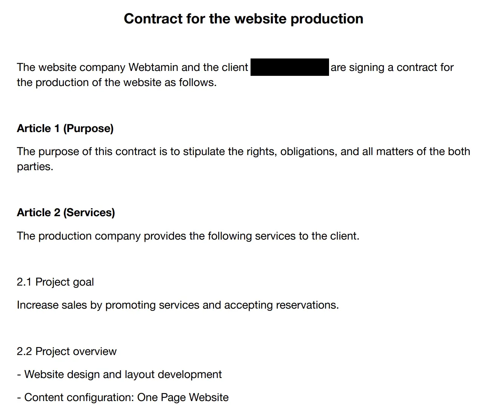

This column is a follow-up to the previous column, '3 Reasons why
there are scammers in website development'. Please refer to this
column for a detailed explanation of typical web development
scams. Then, let's look into
how to prevent fraud from creating websites.
1. Eat-and-run

'Eat-and-run' is a type of fraud in which you
invest a small amount of money to set up a company and then
take the customer's advance money and disappear.
The easiest way to determine the reliability of your business is
to do so. If you have a web development business in mind, try the
following.
- Access the website.
- Check the company's address.
- Look up the business name search service on the county's homepage where the address belongs.
- Check the business name (ex.FBN, DBA, etc.) to see if it is registered correctly.
Did you find it? Congratulations. The company's probability of
being an 'Eat-and-run' type has decreased significantly. But this
alone is not conclusive. If you're a clever conman, you can even
manipulate this. We need to look closely at other aspects as well.
The next step is to contact your old customer. Most web
development websites have testimonials or reviews from previous
customers. Select one of the cases and enter the website.
Find the contact information and send them an inquiry
about the service of the company you are investigating. The
inquiry may consist of a short survey about the name of the
company and the satisfaction level you received. The company's
reliability will increase if you get a positive response.

The image above shows the business name search results in
Sacramento County. You can see that the name of Webtamin is
registered correctly.
2. 'He cries wine and sells vinegar'
The 'He cries wine and sells vinegar' is when
an incompetent individual steals other people's work
and deceives customers as if they were experts. How can you tell
the authenticity of a portfolio in a web development company?
As mentioned earlier, you can contact your old customer directly.
But there's no guarantee of a reply. Even if they do, you don't
know how long it will take.
There is a more direct way to verify. It requires
the web development company to prove the previous work.
Typically, web development businesses keep customers' previous
work files. Because it is necessary for post-maintenance, these
files consist primarily of source code.
Source code is simply a file that creates a website's internal
structure. This allows you to load the website you requested on
your personal computer. You can easily change what you see, such
as the title, the body, and the color of the text.
Even if you don't understand this part well, there's no problem.
It's enough to know that there's something like this. You can
request the following from the company.
"We would like to inquire about the authenticity of your
portfolio. Please record a short video of some source code
modifications reflecting the changes on the website. I'd
appreciate your sharing it using the Google Drive link."
You might wonder what this is all about. So, I've prepared the
example below.

The right side of the image above is the portfolio website of
Webtamin's customers. The dark notepad-like area on the left is
part of the source code. If you look at the image, you can see the
code is being changed to revise an existing bright wallpaper to
black.
This can prove that the company developed the website.
3. Rip-off

The rip-off is a type that
charges excessively for essential services or requires
unreasonable additional costs.
The first thing to do as a precaution is to do some legwork. We
recommend that you
request a quote from at least three companies.
You can know the average market price if you ask about five
companies. Quotations typically come with the proposals. It
consists primarily of an overview of the service. Some places
offer contracts more formally. It must contain a detailed
description of the service in any format.
Is there a place that induces payment without a word of details?
If so, quit that website without hesitation for a second.
Next, check whether there is a proposal or contract. What's
important here is that you have to 'check.' Don't skim through as
if it's like the terms and conditions of membership or something
on any website.
You should carefully read the project description, development
period, cost, refund conditions, maintenance, etc.
You have to take your time to examine whether all the provisions
are reasonable, whether there are any ambiguities, and whether
there are any questions. Ensure there are additional costs for
design, functionality, page count, hosting, etc.
You should ask if there are any expenses you don't understand. If
any sentence in the contract feels clueless, you must ask for a
clear explanation. You should ask if there is something you are
unsure about, even if it's trivial.
If you find it annoying to go over the contract, it can cause a
worse annoying situation in the future.

The screenshot above is part of Webtamin's actual customer
contract. The customer's name is covered to protect the privacy.
Webtamin writes contracts for the creation of all websites. After
that,
the project will be carried out after mutual signatures are
obtained from the company and the client.
So far, we've looked at three typical scams in the web development
industry. Let me sum up. To prevent fraud by requesting website
development, please do the following.
- Confirming Business Registration
- Contact old customer
- Ask businesses to authenticate their portfolios
- Find out at least 3 different companies' estimates
- Review proposals and contracts
Don't just easily believe everything you see. Make sure to examine
the credibility of the information provided by the business.
Don't hesitate to contact us with questions or requests about the
website design.